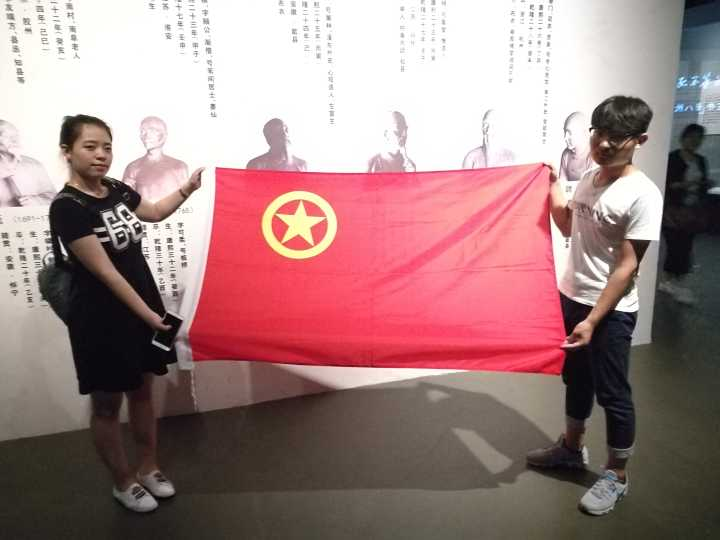
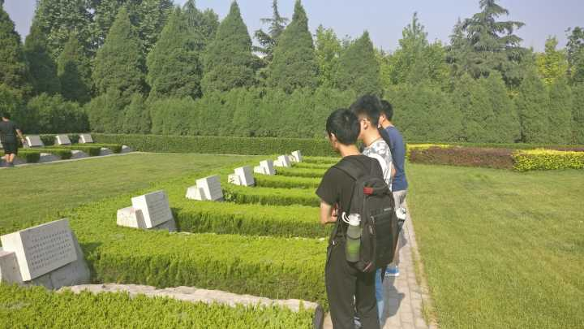

软件学院2016级4班团日活动
第一弹——“志愿青春，爱洒夕阳”团日活动
5月14日一大早，四班的志愿者们踏着清晨的朝阳，赶赴裕华区东明老年公寓，去看望敬老院的爷爷奶奶们，希望通过自己的力量给老人们一个欢乐温馨的周末。路上，同学们有说有笑， 对一会儿的活动充满了期待。经过短暂的车程，我们到达了敬老院。内心既紧张又激动，心里计划着应该如何和爷爷奶奶交谈，如何逗他们开心……

接着，同学们按照事先计划好的分组依次找到属于自己的老人，带着一丝忐忑，我们和老人打开了话匣子：家里有几个儿子女儿；以前是做什么工作的；喜欢听什么戏；爱做什么运动……渐渐地，我们聊到了爷爷奶奶也曾是那样的意气风发，也曾是那样的身形矫健。经过了几十年的光阴洗礼，留下了岁月的痕迹，留下了生活的病痛。追慕往昔，我们从老人们身上看到了可贵的品质，他们也从我们这些青年人身上获得了许久不得的活力。

一上午的时间很是短暂，分开的时刻来临，奶奶不舍的抓着志愿者的手，久久不愿松开：“什么时候能再来啊，你一定记得要来看我啊”“我肯定会来看您的”虽然只有短短的几个小时，同学们已经和老人们建立起了深厚的感情，或许不曾相识，但只因这份情谊，就将我们与陌生人牢牢地系在了一起。
或许，这便是我们做志愿者的初衷吧——将自己的爱传递给身边的人，共同感受这世界的温暖。
第二弹——“漫步历史，感悟国魂”团日活动
当世界都充满着恋爱的味道，当身边都围绕着喜悦的气氛，当所有人心中都存在着或多或少要被表白的紧张的时候———5.20和5.21来了。阳光甚好，微风不燥我支部开始了我们的团日表白之旅。
我支部成员出发前往石家庄省博物馆参观。进馆之前，大家还三三两两的说笑着，谈天说地。进入馆内，大家都被这些历史文物深深吸引了。时不时的可以听到大家由衷的赞叹：“真棒啊！“，”伟大的前辈们！”，“骄傲！”……
博物馆之旅给我们这个理科支部又增添了许多文化气息，让我们深入了解了中华文化的博大精深，让我们坚定信念跟党走！
第三弹——“红色记忆，怀古思今”团日活动
早上6：30。 --“支书，为什么这么早，还没有睡醒…“ --“老一辈革命家每天哪里有时间睡觉啊，革命那时候生活特别艰苦，特别不容易，咱们也要跟上！“ 听完团支书的话，大家若有所思，困意全无，深感对比之强烈，肩上责任之重大。
烈士陵园周围满是茂密的树木，林园里面干净，庄严。当我们踏入林园时，心中有些沉沉的。英雄们栩栩如生的雕塑，把我们拉进当时壮伟的场景下，我们也为他们紧张着，痛着。不知不觉，我们一行人走到了烈士墓区。同学们不自觉地散开，仔细的阅读碑文上烈士的信息，恭敬的注视、鞠躬。没有什么能表达我们心中的惋惜与悲痛，也许只有默哀能让我们表达内心的沉重……
在这片墓区中，烈士们年轻的只有十八九岁，让人悲痛。而现如今的青年大学生，也有着和他们一样的年纪。不一样的是他们已经为国牺牲，而我们中有的人却贪图享受，不思进取。这之间的思想觉悟千差万别。